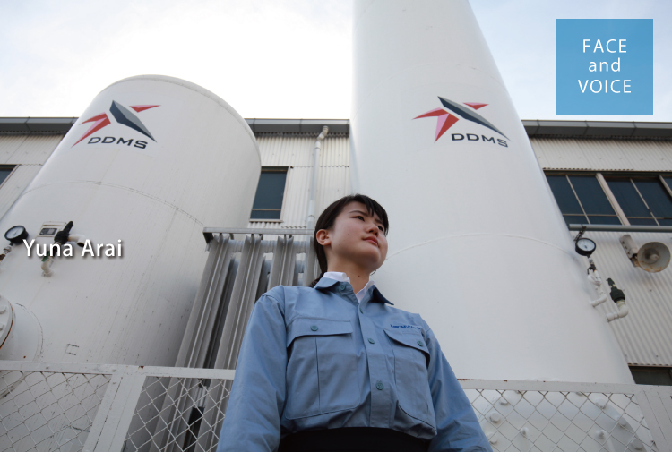

生産本部
グローバル生産技術部
技術室
新井 結菜

女性技術者のパイオニアとして
私は、理系の大学でデザインや建築について学んでいたのですが、プロダクトデザインについて学ぶうちに金型に出会い、その面白さを感じるようになりました。例えば電化製品を梱包する際に、製品を支えるための様々な形の発砲スチロールが用いられますよね。そうした形をつくる仕事ってすごいなと、子供のころから感じていましたので、形づくりを支える金型生産に携わる当社に興味を持ちました。また、金型は今後も大量生産で物をつくる時には欠かせないもの。日本の技術として後世に残していこうという流れもあるので、日本における数少ない成長産業の一つだと確信し、当社の将来性にも魅力を感じました。
就職活動中は他の技術職も探しましたが、女性を採用している企業は限られていました。しかも私は理系大学出身ですが、工学分野を学んだわけではないので、未経験者ということになります。そうなると女性の採用率はかなり低くなるという状況の中で、当社は未経験でも採用対象と間口が広く、さらに女性の活躍を推進していたので、この会社なら入社後も性別に関係なく存分に仕事ができるのではないかと感じ、入社の大きな決め手となりました。未経験からのスタートですが、いち早く技術や知識を吸収し、一人の技術者として頼られる存在になることが将来の夢です。女性技術者が少ない世界ですが、女性だからこその細かい心配りで、今まで見落としていたような改善点も見つけ出し改善していければと思います。
堅実に実力をつけたい人には最高の環境
入社後は、大同グループ全体で総勢約330人に上る規模の新人研修に参加しました。様々なグループ会社のことを知り、その中で当社がいかに業績を伸ばし、前向きな会社であるかを実感しました。研修は合宿形式で、グループ活動を通じて、ルールを守り、いい製品を創るための協力体制の基礎を学びました。その後は、当社の工場を見学し、実際の生産現場で先輩方が、常に労働環境の改善を図り、日々作業の効率化を目指している姿勢を改めて感じることができました。今後はより実践的な技術や法律等の知識を座学で学んだ後に、担当部署へ配属される予定です。
当社の仕事は細かい気配りのできる人に向いていると思います。特に技術職は自分ですべての生産現場に携われるわけではないので、各現場を見て自分で考え、対話して情報を聞き取ることも必要。相手の立場に立って考えることが重要だと思います。また堅実に長い目で見てコツコツと力をつけたいという方には、資格取得のサポートもありますし、会社全体で新人をフォローしようという雰囲気があるのでとてもよい環境だと思いますよ。